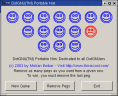
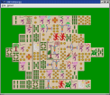

Mohan Embar wrote an implementation of the traditional "Nim" game to demonstrate how to write a Model-View-Controller application using DotGNU Portable.NET's System.Windows.Forms implementation.
dotgnu-nim-20040305.tar.gz
After unpacking the distribution, use "ilrun nim" to run
the game. See the README file in the distribution for further
instructions.
Qt# Mahjongg is an example of writing a Qt# application for use with DotGNU Portable.NET. It implements a simple "match the tiles" game, similar to KMahjongg.
You will need to install Qt# to compile and run this program. Once you have done that, unpack the following file and type "make":
mahjongg-0.0.1.tar.gz
You then run it by typing "ilrun mahjongg.exe" at the
command-line.
PNetMark is a benchmarking tool for Common Language Runtime (CLR) environments such as DotGNU Portable.NET. The original version was loosely based on the techniques used by the CaffeineMark to benchmark Java Virtual Machines. Since then, two other standard floating-point benchmarks have been included: SciMark and Linpack.
The primary purpose of PNetMark is to identify areas of DotGNU Portable.NET that may need further optimization. The source code is available here:
pnetmark-0.0.6.tar.gz
See the README file in the distribution for instructions on compiling and running the benchmarks.
The Pnetcurses program is an example of using PInvoke with DotGNU Portable.NET to access external C libraries. It wraps up the "ncurses" screen library, and runs inside a regular terminal window. You will need either a Unix system, or Cygwin under Windows to run this example:
pnetcurses-0.0.2.tar.gz
The Pnetcurses package also includes a small game called "Curse of Frogger" that demonstrates how to use the library.
The Xsharp and System.Drawing.Win32 libraries within pnetlib also use PInvoke extensively, so you can look at those for further guidelines. You will probably also want to read the PInvoke Conventions for Unix guide when writing PInvoke applications.
You are invited to add your comments concerning this page at the appropriate page of the DotGNU Wiki
Verbatim copying and distribution of this entire article are permitted in any medium or format, provided this notice is preserved.
This page is maintained by Norbert Bollow <nb@SoftwareEconomics.biz> with support from the DotGNU Developers mailing list.